BORK G600
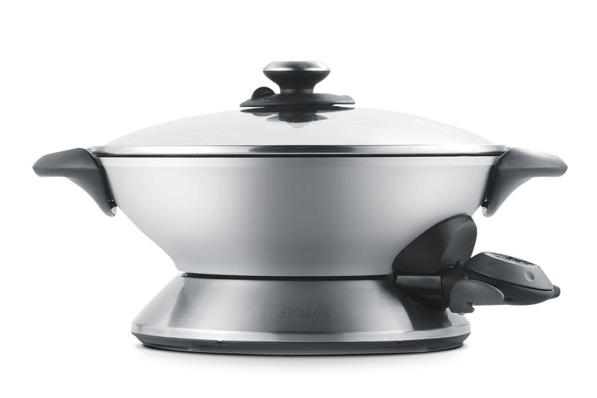Технические характеристики
Напряжение: 220-240 В
Мощность: 2200-2400 Вт
Объем чаши: 6 л. Диаметр MAX – 36 см
Материалы, для изготовления
- Основание: Материал (металл/полимер)
- Чаша: Материал (алюминий)
- Крышка: Материал (стекло)
- Клапан: выпуска пара Материал (полимер)
- Рукоятка: крышки Материал (металл/полимер)
- Рукоятка: чаши Материал (полимер)
- Модуль: управления Материал (полимер)
- Зажим для снятия модуля управления: Материал (полимер)
- Нагревательный элемент: Материал (алюминий)
Антипригарное покрытие чаши ETERNA
Материал чаши – алюминий. Алюминий благодаря свойствам высокой теплопроводности, идеально подходит для обжаривания продуктов при постоянном перемешивании, готовки на пару, тушении или жарке во фритюре. Многослойное покрытие с уникальным составом ETERNA обладает антипригарными свойствами, а также обеспечивает надежность и стойкость к механическим повреждениям. Уникальный состав ETERNA сохраняет свои антипригарные свойства на весь период службы. Высокое качество материала позволяет мыть чашу в посудомоечной машине.
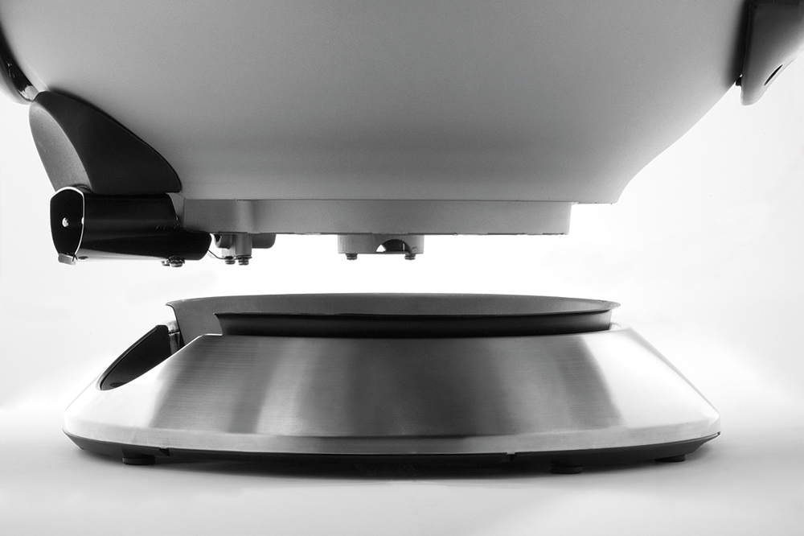Чаша для приготовления съемная объемом 6 литров
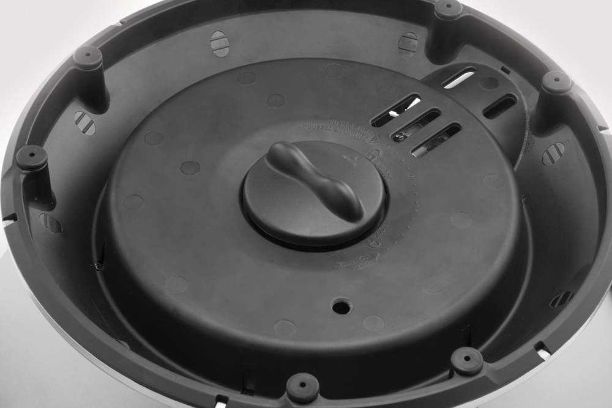
Снятие чаши осуществляется за счет встроенного механизма на обратной стороне основания
Замок для фиксации/съема чаши имеет два указателя: UNLOCK (открыть) LOCK (закрыть)
Снятие и установка чаши осуществляется поворотом замка на 45°

Нагревательный элемент 2400 вт
Нагревательный элемент интегрирован в дно чаши.
Расположение и форма нагревательного элемента позволяют максимально быстро и равномерно распределять температуру по контуру чаши.
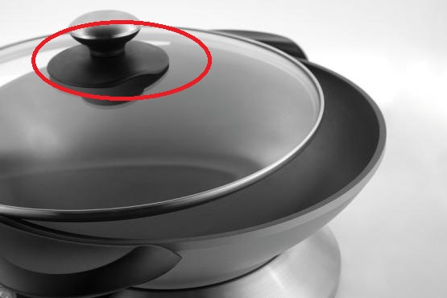Крышка из высокопрочного стекла с регулируемым выходом пара
Диаметр крышки: MAX – 36 см.
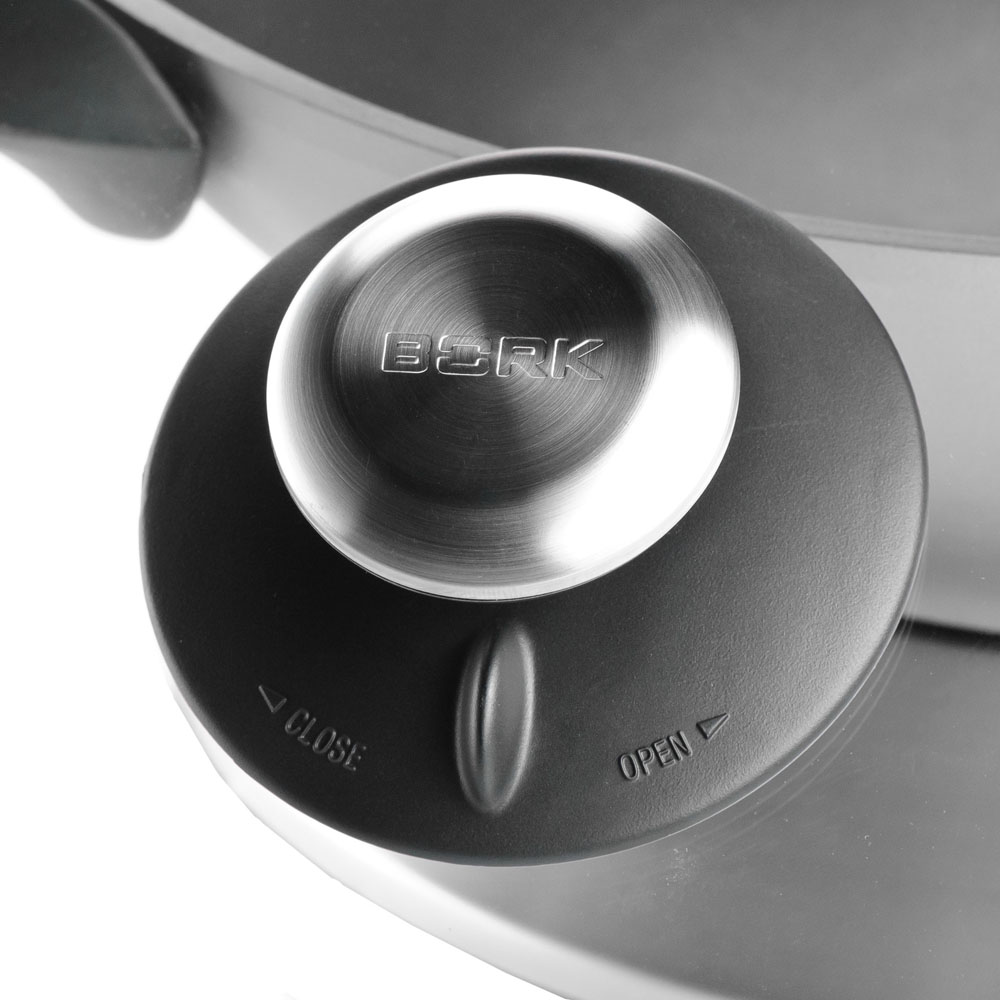Сброс или удержание пара осуществляется с помощью поворотного элемента клапана находящегося под рукояткой крышки.
CLOSE (закрыть)
OPEN (открыть)
Выпускной клапан разборный, в случае засорения легко чистится.
Стеклянная крышка обеспечивает визуальный контакт во время готовки. Стекло является самым безопасным материалом в качестве крышки, так как не вступает окислительную реакцию с испаряемой жидкостью, которая частично возвращается в приготавливаемую пищу.
Управление
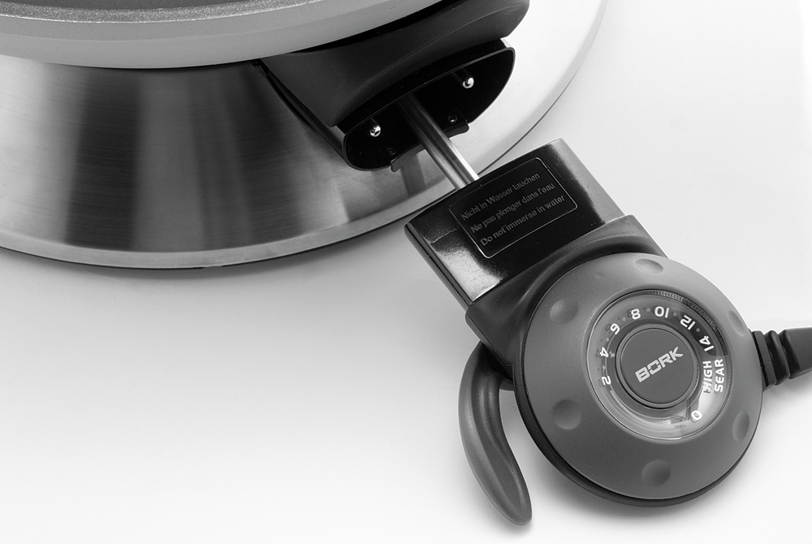Модуль управления снимается нажатием специального зажима с левой стороны устройства.
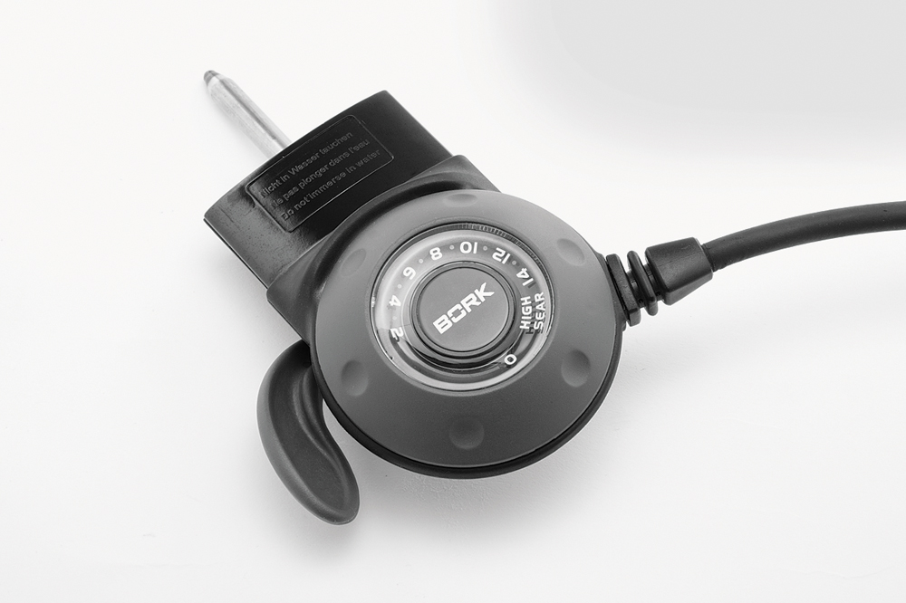Удобное управление
Регулятор мощности управления имеет 15 температурных режимов, где самая высокая температура 218 °С.
Максимальный нагрев происходит в режиме:(HIGH SEAR). В режиме (MIN) Вок прекращает нагрев. Модуль управления имеет температурный датчик, который позволяет контролировать установленные параметры мощности и температуры, а также является защитой от перегрева.
Датчик (щуп), встроенный в модуль выполняет функции термостата за счет надежного устройства.
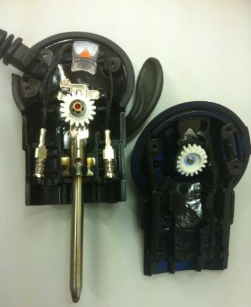Полимер, из которого изготовлен модуль управления, является термостойким и способен выдерживать сверхвысокие температуры.
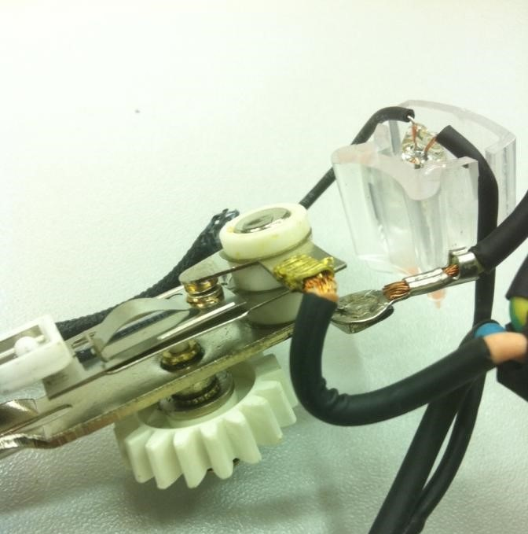Принцип работы термостата заключается в биметаллической пластине, которая при температурном перепаде на концах размыкает контакт и отключает систему нагрева. В случае падения температуры на 2-4 градуса, контакт замыкается. В самом датчике (щупе) встроена тепловая трубка, которая отвечает за передачу тепла на контактную биметаллическую пластину.
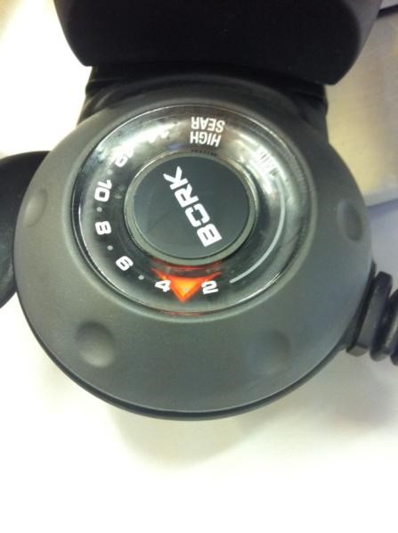Индикатор работы
Модуль управления оснащен индикатором работы, который загорается при работе.
В рабочем режиме индикатор в форме стрелки горит оранжевым цветом.
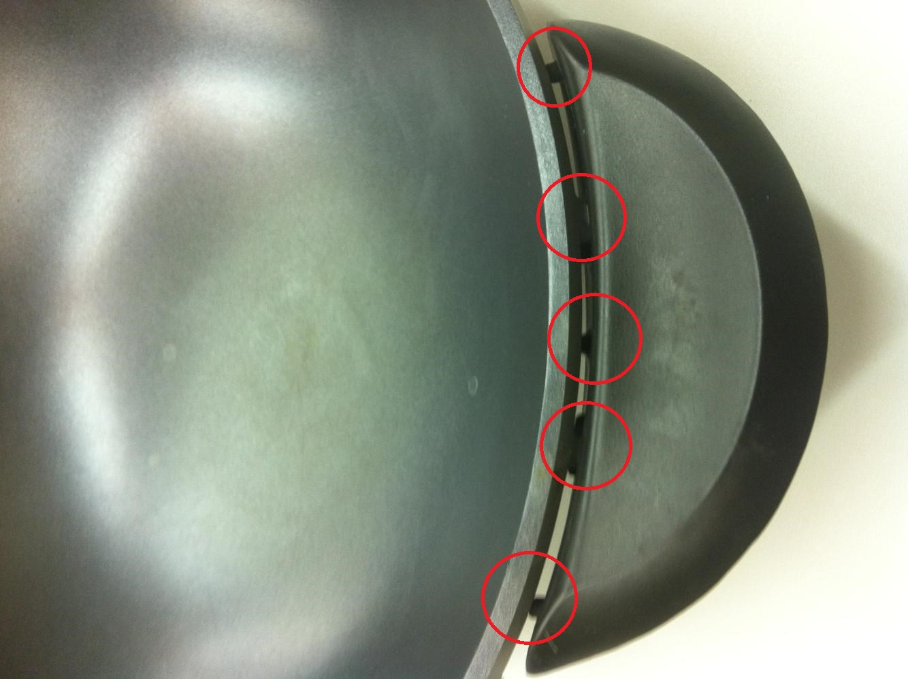Рукоятки чаши
Обе рукоятке закреплены на чаше особым образом. Для того чтобы рукоятки не нагревались от чаши, они закреплены так, что плотно не прилегают к самой чаше. Каждая рукоятка имеет всего 5 - точек соприкосновения с чашей. Таким образом, тепловая энергия не может распространяться по всему контуру рукояток и это делает эксплуатацию Вок максимально удобным и безлопастным.
Рекомендации по эксплуатации
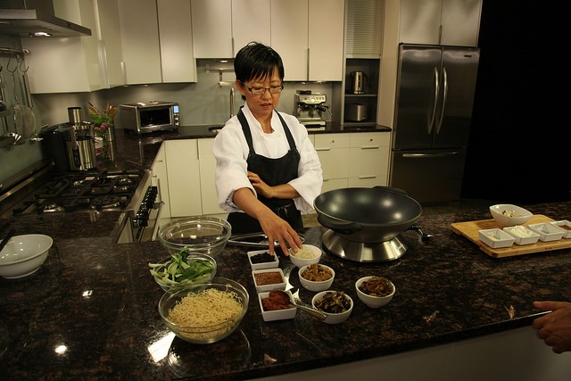- Стрелка нагрева (индикатор работы) расположена на модуле управления. На модуле управления встроен регулятор мощности и имеет 15 точных настроек нагрева, в том числе и HIGH SEAR – «Высокая степень обжарки», для точного регулирования температуры.
- При первом использовании для достижения оптимальных результатов предварительно прогрейте Вок в течение 10 минут, используя настройку HIGH SEAR «Максимальная прожарка», прежде чем приступить к готовке (ЭТО ЯВЛЯЕТСЯ СВОЕГО РОДА «ПРОКАЛИВАНИЕМ» ЧАШИ).
- Настройку HIGH SEAR следует использовать для подрумянивания и поджаривания продуктов.
- Вок автоматически будет включаться, и выключаться во время приготовления пищи для поддержания выбранной температуры.
- После достижения необходимого уровня нагрева, стрелка нагрева (индикатор работы) перестает светиться. Вок готов к использованию. Стрелка нагревания последовательно включается и отключается в течение всего процесса приготовления пищи. Это является поддержанием установленного уровня мощности/температуры с помощью термостата.
- Значение цифр на циферблате модуля управления:

Использование масел для жарки
Для жарки в Вок в основном используются масла растительного происхождения, которые обладают различными свойствами и температурами кипения. Качество масел определяет их происхождение, условия роста и методы получения в процессе отжима. Отжим имеет особое значение, так как именно от него будет зависеть конечный результат.
Вок позволяет обжаривать продукты, как с меньшим, так и с большим количеством масла, т.е. обжаривает как полноценный фритюр.
Важно: Прежде чем использовать Вок с большим количеством масла (фритюрница) сначала следует разогреть масло до максимума, так как это обеспечит быстрое обжаривание поверхности продукта («схватываемость»). Чем скорее поятся внешняя оболочка, тем правильней вы используете Вок. Нужно также помнить о постоянном перемешивание, чтобы обжариваемые продукты не слипались между собой. Также следует учитывать, что продукты лучше закладывать по одному кусочку. Таким образом, не случится слипание продуктов.
Примечание: В Воке BORK G600 в режиме HIGH SEAR масло в нагретом состояние не «бурлит» как обычная вода, так как температура кипения масел значительно выше, чем температура кипения воды. В Воке BORK G600 время нагрева большого объема масла занимает от 5 – 15 минут в зависимости от количества и вида масла.
Характерное «бурление» масла появляется после закладывания продуктов во время жарки. Масло начинает «бурлить» потому, что начинает закипать вода, содержащаяся в продукте. Эта указывает на большую разницу температур кипения масла и воды.